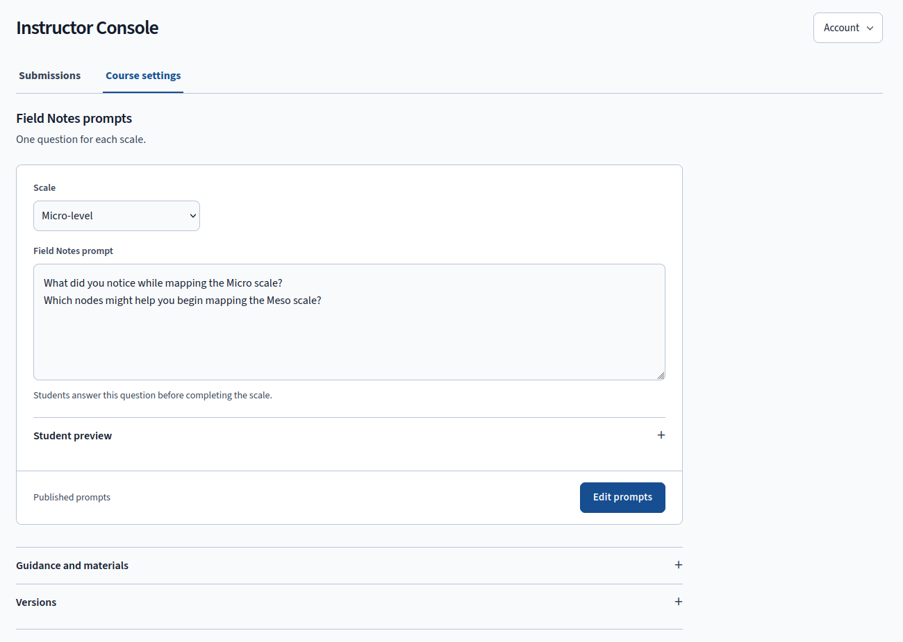
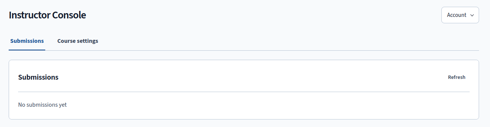

Instructor Console
Give students a question for each level, then read their submitted maps alongside the evidence behind them.

Opening the Console
Choose Instructor Console on the Projects page. The console opens on Submissions, where you review student work. Course settings holds the questions and model guidance. Account shows your identity and sign-out control, while Projects returns you to the workspace.
Field Notes Prompts
Use a Field Notes question to connect the current map with the next inquiry. In Course settings, choose Edit prompts to create a draft from the published version. Select a scale, then write a question of up to 1,200 characters. Name the lesson's case or reading so students can relate the question to their work.
Open Student preview to inspect the exact plain text students will receive, including unsaved edits. Publish changes saves pending edits and publishes them in one action. Save draft retains your work for later. Every scale needs a nonblank question before you can publish, and the editor takes you to any missing question.
For the East Harlem case, you might ask students whose direct relationships their Micro map leaves out, then ask them to plan an observation and identify a link between two of Rosa's everyday settings. The first part tests the current map. The second gives students a question to investigate at Meso.
Students' existing answers remain when you change a question. You can edit and preview questions without making a model request.
Guidance and Materials
Use Guidance and materials when the model needs your course's terms or a case summary. Choose a Part and a mapping step. Part 1 covers Micro and Meso, while Part 2 covers Exo and Macro. Each combination stores up to 2,500 characters of guidance about what the model should suggest and up to 4,000 characters of course material it may draw on.
Preview saved guidance shows the student-facing text without revealing internal prompts. Preview level changes only the analytical context of that preview. The app adds your guidance after its fixed instructions, so the level definitions and rules for student choice, privacy, and output structure continue to govern requests.
Versions
Course settings retain a version history. Create draft copies a version so you can revise it, name the draft, and add an optional change note when saving. Publishing makes that version govern new model requests. To return to earlier settings, create a draft from an earlier version and publish it. Earlier records remain readable.
The app checks the revision before accepting a save. If another change has made your draft stale, it preserves your work and offers Load server revision for comparison. If publishing fails after the save succeeds, your draft remains saved and you can retry publishing.
Submissions

Students submit a saved stage from Project → Progress. Open a submission to read the snapshot under its project, level, and stage. Choose a feedback mode, write an annotation or focused question, and select Record feedback. Your response leaves the student's map intact and does not block progress through a stage.
The visible queue refreshes every 30 seconds and pauses while you draft feedback. Students can therefore continue working while you read a submitted version.
Students and Saved Progress
Open Students and saved progress under Submissions when you want to check who has started. The collapsed section loads the roster on demand and shows enrolled students with a recorded visit, their latest saved maps, and each map's level and stage. A student who has not saved a course map appears as first map pending. Use that status to follow up on access or an unfinished start before asking for a submission.